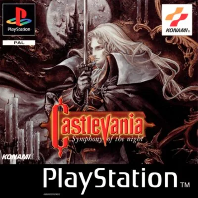

PlayStation
Castlevania: Symphony of the Night
- Año: 1997
- Desarrollador: Konami Computer Entertainment Tokyo
- Género: Rol / Acción
- Jugadores: 1 jugador
Alucard, el hijo de Drácula, despierta de su largo sueño cuando el castillo de Castlevania vuelve a aparecer, y entra en él para enfrentarse a las criaturas de la noche. Mezcla plataformas y rol: Alucard sube de nivel y consigue armas, armaduras, pociones, hechizos y reliquias. Algunas reliquias le dan poderes de vampiro que abren nuevas zonas de un castillo enorme, lleno de pasadizos y secretos.
Controles
si el botón 1P (Start) pausa el juego. Según las guías, Start pausa y abre la pantalla del personaje, y Coin (Select) pausa y abre el mapa.
Mando de PlayStation (digital).
| Panel | Juego |
|---|---|
 | ✕ · Saltar |
 | ○ · Defenderse con el escudo |
 | R1 |
 | □ · Atacar |
 | △ · Hacer el ataque especial (al principio del juego); más adelante, retroceder de espaldas |
 | L1 |
 | R2 |
 + + | Hacer un ataque rasante |
 | L2 |
 | Start |
 | Select |
| + | Salir del juego |
El panel en PlayStation

Argumento
Recopilado de internet (2026-11-02).
El juego empieza en 1792, con Richter Belmont venciendo al conde Drácula (el final de Rondo of Blood). Cinco años después, Richter lleva un año desaparecido y el castillo de Drácula ha vuelto a aparecer.
Alucard, el hijo de Drácula, que dormía desde que ayudó a Trevor Belmont a derrotar a su padre trescientos años antes, despierta y va al castillo para destruirlo. Allí conoce a María Renard, antigua compañera de Richter, que lo está buscando.
Alucard encuentra a Richter, que asegura ser el nuevo señor del castillo. María sospecha que alguien lo controla y le da a Alucard las Holy Glasses, unas gafas para ver a través de las ilusiones, y le pide que no le haga daño.
Final: en el combate, Alucard rompe el hechizo que domina a Richter y aparece Shaft, el sirviente de Drácula que lo controlaba. Alucard lo persigue hasta un castillo invertido, vence a Shaft y se enfrenta a Drácula, que quiere vengarse de la humanidad por la ejecución de Lisa, la madre de Alucard. Alucard lo derrota y le transmite las últimas palabras de Lisa: que no odiara a los humanos. Después, decide desaparecer del mundo por su sangre maldita. Según cuánto del castillo hayas explorado, María lo sigue para hacerle cambiar de idea o se queda con Richter.
Fuentes
Jugabilidad
Recopilado de internet (2026-11-02). Lo marcado con ⚠️ no está probado en la bartop.
- Versión de la bartop: EE. UU. (SLUS-00067). Menús y textos en inglés.
- Tipo de juego: no va por niveles: es un castillo enorme que se explora libremente, con mapa y porcentaje de exploración. Las zonas nuevas se abren al conseguir objetos y poderes (detalle en «Guía de niveles»).
- Prólogo: se empieza jugando con Richter Belmont, en la batalla final del juego anterior (Rondo of Blood). Por eso X hace al principio un ataque especial: es el de Richter. Después se juega con Alucard.
- Rol: Alucard gana experiencia y sube de nivel (vida, magia y fuerza). Las Life Vessel y Heart Vessel suben para siempre la vida y los corazones máximos. Tiene cuatro atributos: fuerza, constitución, inteligencia y suerte.
- Equipo: un arma o escudo en cada mano (Y y A), armadura, casco, capa y accesorios.
- Reliquias: dan poderes, como el doble salto o transformarse en murciélago, lobo o niebla.
- Magia: 8 hechizos que se hacen con combinaciones del joystick, y familiares que acompañan y ayudan.
Botones según las guías (⚠️ por confirmar)
| Mando de PS1 | Panel | Acción |
|---|---|---|
| R1 | R | Transformarse en murciélago (con su reliquia) |
| R2 | ESC | Transformarse en lobo (con su reliquia) |
| L1 | L | Transformarse en niebla (con su reliquia) |
| Select | Coin | Pausar y ver el mapa |
| Start | 1P | Pausar y abrir la pantalla del personaje |
| Arriba + □ | Arriba + Y | Usar el arma secundaria |
| ✕ ×2 | B ×2 | Hacer el doble salto (con su reliquia) |
| Izquierda, derecha, arriba, abajo + □ / ○ | Lo mismo + Y / A | Invocar un espíritu (hechizo) |
Fuentes
Guía de niveles
Recopilado de internet (2026-11-02).
El castillo tiene dos mitades: el castillo normal y, si se hace bien lo de «Trucos y secretos», el castillo invertido (el mismo castillo boca abajo, con enemigos y jefes nuevos). Las zonas, en el orden en que se visitan por primera vez en el longplay de LongplayArchive:
| Parte | Zonas |
|---|---|
| Prólogo | Final Stage: Bloodlines (con Richter) |
| Castillo | EntranceAlchemy LaboratoryMarble GalleryOuter WallLong LibraryRoyal ChapelCastle KeepOlrox's QuartersColosseumClock TowerUnderground CavernsNightmareAbandoned MineCatacombs |
| Castillo invertido | Reverse KeepReverse Clock TowerForbidden LibraryReverse Outer WallBlack Marble GalleryReverse CavernsReverse MinesFloating CatacombsReverse EntranceNecromancy LaboratoryAnti-ChapelReverse ColosseumDeath Wing's LairJefe final |
Jefes (longplay al 200,6 % de Bayo Longplays):
| Parte | Jefes |
|---|---|
| Castillo | Gaibon y SlograDoppelgangerHippogryphWerewolf y MinotaurusLesser DemonOlroxSuccubusScyllaGranfaloonRichter |
| Castillo invertido | MedusaTrevor, Grant y Sypha falsosBeelzebubThe CreatureDarkwing BatAkmodan IIDoppelganger40DeathGalamothShaftDrácula |
- En el castillo invertido hay que vencer a 5 jefes para reunir los 5 restos de Drácula (corazón, diente, anillo, costilla y ojo), que abren el combate final.
- El vídeo de Bayo marca también las paredes rompibles y salas secretas de cada zona.
Objetos
Recopilado de internet (2026-11-02). Lo marcado con ⚠️ no está probado en la bartop.
| Objeto | Qué hace |
|---|---|
| Life Vessel | Sube para siempre la vida máxima. |
| Heart Vessel | Sube para siempre los corazones máximos (para el arma secundaria). |
| Leap Stone | Permite el doble salto. Está en el Castle Keep. |
| Reliquias de murciélago, lobo y niebla | Permiten transformarse (R, ESC y L). |
| Jewel of Open | ⚠️ Abre las puertas azules. |
| Holy Symbol | ⚠️ Permite bucear en el agua profunda. |
| Spike Breaker (armadura) | Permite cruzar los pasillos de pinchos. |
| Gold Ring y Silver Ring | Hacen falta para conseguir las Holy Glasses (ver «Trucos y secretos»). |
| Holy Glasses | Dejan ver a través de las ilusiones: imprescindibles para el castillo invertido. |
| Sword of Dawn | Permite invocar guerreros esqueleto (ver «Trucos y secretos»). |
Trucos y secretos
Recopilado de internet (2026-11-02). Lo marcado con ⚠️ no está probado en la bartop.
Secretos
- Castillo invertido (la otra mitad del juego):
- Conseguir el Gold Ring venciendo a Succubus en Nightmare.
- Conseguir el Silver Ring (tras cruzar los pinchos de las Catacumbas con el Spike Breaker; te lo da María).
- Con los dos anillos equipados, ir a la sala del gran reloj (Clock Tower): María da las Holy Glasses.
- Equiparlas en el combate contra Richter y destruir el orbe verde que lo controla, sin matar a Richter.
- Finales:
- Si matas a Richter sin las Holy Glasses, el juego termina ahí, con el final malo.
- Si vences a Drácula con menos del 196 % del mapa, María no sigue a Alucard.
- El vídeo de Bayo muestra los tres finales: el mejor, el peor y el malo.
- Nombres especiales (se escriben como nombre al empezar partida, después de haber acabado el juego):
- RICHTER: jugar con Richter.
- AXEARMOR: empezar con la armadura Axe Lord. ⚠️ PSX Data Center dice «AXELORD».
- X-X!V''Q: modo suerte: 99 de suerte y el resto de atributos muy bajos.
Truco: guerreros esqueleto (⚠️ sin probar)
Con la Sword of Dawn equipada, pulsa abajo, adelante, adelante y □ o ○ (en el panel: abajo, adelante, adelante y Y o A). Salen esqueletos que luchan a tu lado un rato.
Truco: cambiar la música (⚠️ sin probar)
Al elegir entre el modo Arrange y el original, mantén R1 + L1 (en el panel: R + L).
- Existen códigos de GameShark (dinero, vida y magia infinitos), pero no los copio aquí.
Longplay

Partida completa de la versión PlayStation (299 min), de LongplayArchive: Longplay of Castlevania: Symphony of the Night.
Pulsa el minuto de un nivel para ver el vídeo desde ese punto.
Zonas
| Parte | Zonas |
|---|---|
| Prólogo | Final Stage: Bloodlines (con Richter) ▶ 2:00 |
| Castillo | |
| Castillo invertido | Reverse Keep ▶ 3:00:10Reverse Clock Tower ▶ 3:04:35Forbidden Library ▶ 3:15:55Reverse Outer Wall ▶ 3:22:10Black Marble Gallery ▶ 3:25:09Reverse Caverns ▶ 3:27:07Reverse Mines ▶ 3:41:00Floating Catacombs ▶ 3:45:44Reverse Entrance ▶ 3:58:48Necromancy Laboratory ▶ 4:03:06Anti-Chapel ▶ 4:11:22Reverse Colosseum ▶ 4:14:00Death Wing's Lair ▶ 4:18:24Jefe final ▶ 4:42:21 |
Jefes, secretos y finales
Partida al 200,6 % con todos los finales y secretos (348 min), de Bayo Longplays: Castlevania Symphony of the Night 200.6% - All Endings - Secrets - Original Resolution - PS1 (01).
Los minutos de esta parte son de este segundo vídeo, que no está incrustado: el ▶ lo abre en YouTube (salvo dos finales, marcados en el primero).
| Parte | Jefes |
|---|---|
| Castillo | |
| Castillo invertido |
| Secreto | Momento |
|---|---|
| Castillo invertido | |
| Objetos | |
| Finales | |
| Nombres especiales |
El vídeo de Bayo marca también las paredes rompibles y salas secretas de cada zona.